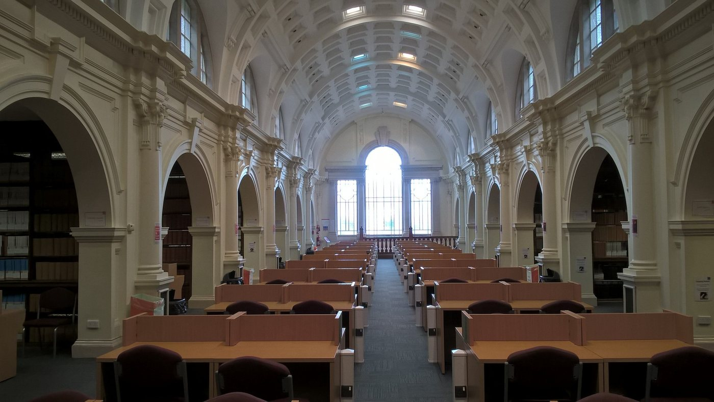
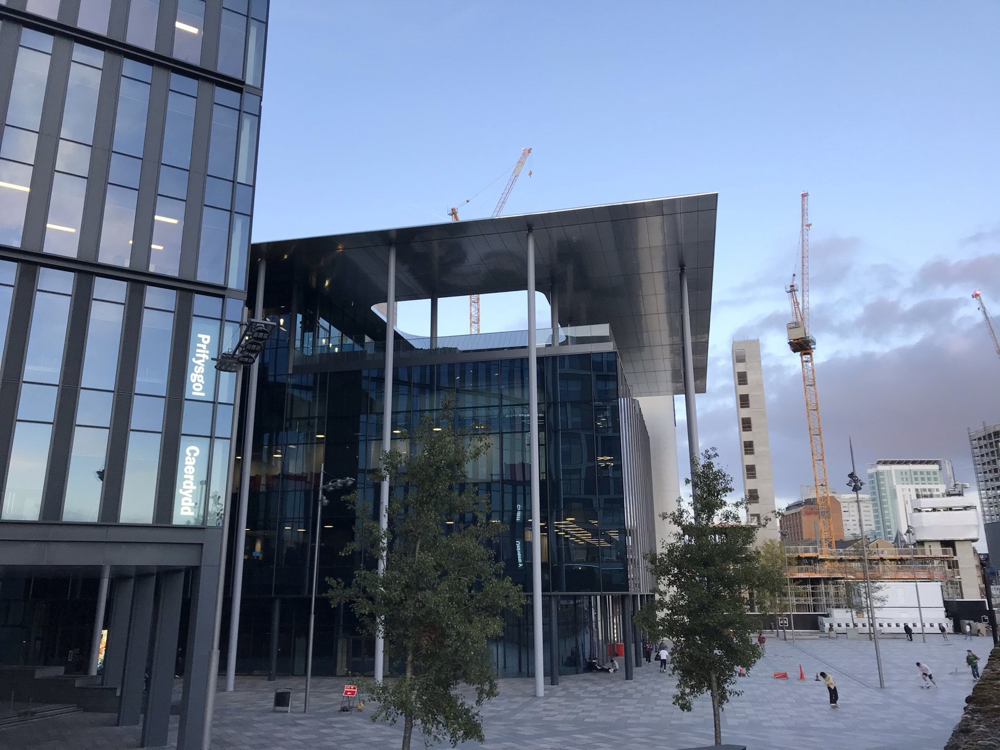
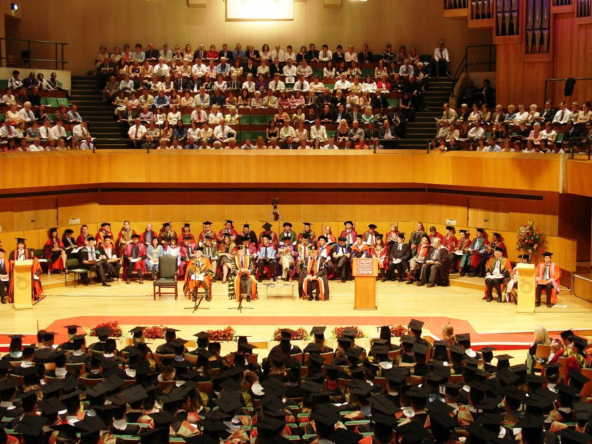

01
Growth · 互动增长
+18%
短视频互动率提升
实习期 13 条短视频 · 平均播放 1.2 万
海外社媒矩阵累计曝光
TikTok / Instagram / Facebook 三端矩阵 · 易赛诺出海项目记录
建联合作的海外 KOL / KOC
KOL Network累计策划产出的内容
Content Production独立完成并发布的短视频
Short Videos从选题、双语脚本到分发 —— 每个结论背后都有数据佐证。以下数字均来自本人实际运营与作品的一手记录。
数据来源：易赛诺出海项目记录 / 海豚出版社实习数据 / PTSD 纪录片发布后台 · 一手运营与分发记录
从头部零售到国家级对外传播机构，再到出海品牌一线
—— 主线始终是「内容 × 跨文化 × 数据」
海外矩阵 · 搭建并运营 TikTok / Instagram / Facebook 社媒矩阵，累计曝光 50 万+
品牌孵化 · 参与 30+ DTC 品牌冷启动，沉淀内容与投放 SOP；本土化文案 + 节庆活动，单次引流 +20%
达人运营 · 筛选建联 KOL/KOC 30+，完成沟通、寄样、审稿与发布跟进
全流程产出 · 13 条短视频从选题、拍摄、剪辑到发布独立完成，平均播放 1.2 万，互动率提升 18%
用户运营 · 运营“书香海豚”公众号与微博，涨粉 10%、互动率提升 20%
内容策划 · 结合国际视角与国内政策热点做选题，部分解读文案获官方采纳
稿件产出 · 独立完成 5 篇稿件，获本地平台推荐位
全平台运营 · 运营公众号 + 抖音双端内容，阅读量提升 30%
舆情分析 · 跟踪本地舆情并输出分析，支撑选题与发布节奏调整
大促内容 · 围绕 618 / 双11 撰写品牌文案与卖点内容 150+ 篇，单篇最高曝光 10 万+
活动内容 · 支撑战略发布会、冠名赛事等品牌活动，产出发言稿、串词与新闻稿
内容协同 · 与设计团队共创海报与详情页文案，把控品牌调性统一
六个方向各选代表作 —— 深度报道、出海增长、双语现场、跨文化人物、品牌视觉、社媒短视频；每个都以关键词开题、数据坐实。
2024.03 — 2024.08 · 卡迪夫大学 · 独立导演 / 制片 / 剪辑
| 作品档案 | 内容 |
|---|---|
| 成片规格 | 15:27 · 1920×1080 · 中英双语字幕 51 段 |
| 叙事结构 | 口述实录 × 专家解读 × 艺术创作 三层交织 |
| 调研体量 | 2 万字文献综述 · 2.4 万样本背景数据 |
| 采访阵容 | 退伍军人 Graham Jones / Mark Hodgkinson · 临床专家 Neil Kitchiner 医生 · LGBTQ+ 退伍军人研究者 Sian Woodland · VC Gallery 创始人 Barry John |
| 拍摄机构 | Woody’s Lodge（园艺 / 动物疗法 社交中心）· VC Gallery（艺术疗愈） |
| 合规与发布 | 卡迪夫大学伦理委员会批准 · YouTube / B站 / 微博国际版 · 观看 3000+ |
PROJECT BRIEF以“记忆如何困住一个人”为叙事入口：让退伍军人的画布成为证词 —— 红色与黑色反复出现，既是痛苦的外化，也是疗愈的开始。跟拍 Woody’s Lodge 的园艺与动物疗法、VC Gallery 的艺术疗愈课程，也如实呈现英国慈善体系“成熟但资金仍然短缺”的一面；中英双语字幕面向全球观众，隐含一条中国语境的对照线索。
“当创伤事件变成记忆，退伍军人要如何面对这些记忆？”
易赛诺科技 · 2025.02 — 2026.05 · 品牌运营
| 作品档案 | 内容 |
|---|---|
| 内容矩阵 | TikTok / Instagram / Facebook 三端日常运营 · 累计曝光 50 万+ |
| 品牌孵化 | 30+ DTC 品牌：定位 → 独立站内容 → 社媒冷启动 SOP |
| 内容产出 | 本土化文案 · 短视频脚本 · 广告创意（避开“中式表达”） |
| 达人网络 | 建联 KOL/KOC 30+：沟通 · 寄样 · 审稿 · 发布跟进 |
| 增长案例 | 节庆营销单次为客户店铺引流 +20% |
PROJECT BRIEF出海内容的第一道门槛不是语言，是“像本地人说话”。从品牌定位、独立站内容到社媒冷启动，为 30+ DTC 品牌搭一条可复用的内容流水线；每次投放后以数据迭代素材与节奏，把增长沉淀成 SOP。
2024.12 · 英国 Barry Island
| 作品档案 | 内容 |
|---|---|
| 现场背景 | Storm Kathleen · 70 mph 阵风 · Whitmore Bay 102 年海堤受损 · 十天未见修复 |
| 报道方式 | 英文出镜 · 现场走播 · 同期声保留 |
| 采访对象 | 当地居民 Charmaire Marsden / Wayne Jones / Rhian Ellis |
| 新闻工作流 | iNews / ENPS 编辑部流程 |
| 成片交付 | 01:40 · 中英双语字幕 18 段 |
PROJECT BRIEF风暴过去十天，海堤仍然没有开始修理 —— 报道从一个反差切入。以英文记者身份完成现场走播与三方采访，把“70 英里的风、102 年的墙、十天的等待”作为叙事的锚点，完整跑通现场 → 采访 → 剪辑 → 双语交付的新闻生产链路。
2024 · 英国 · 公益机构 Sight Life
| 作品档案 | 内容 |
|---|---|
| 人物 | Des Radcliffe · 75 岁 · 视障约 30 年 |
| 机构 | Sight Life（1865 年成立）· 摄影小组 |
| 故事线 | 5 岁得到第一台相机 → 9 岁自学冲印 → 从业 20 余年 → 放疗损伤视网膜 → 重拾快门 |
| 风格 | 黑白摄影（源自胶片年代的记忆） |
| 制作 | 编导 / 拍摄 / 中英双语字幕 32 段 |
PROJECT BRIEF跟拍 75 岁的视障摄影师 Des —— 他为一束穿过叶片的光停下脚步，在公园里慢慢举起相机。短片用他的取景方式讲一个简单的道理：摄影不仅关乎视力，更关乎热爱与坚持。
“摄影不仅关乎视力，更关乎热爱与坚持。”
品牌视觉与物料设计 · 参与角色：内容策划 / 视觉方案 / 传播策略
| 品牌体系 | 落地内容 |
|---|---|
| 品牌内核 | Acai 深紫能量 × Yogurt 温润基底 × Mood 情绪价值 |
| 角色系统 | Ayo（打球 / 拳击 / 健身）· Yoyo（瑜伽 / 长跑 / 护肤）双 IP —— 延展至手办“全家福”与婴幼儿毛绒玩具 |
| 视觉语言 | 昭和复古美学 · 莓果色系 · 圆润字体与流动线条 |
| 空间与物料 | 门店视觉 · 菜单 · 包装 · 帆布包 / 双肩包 / 买菜推车 · 餐具马克杯 · 钥匙扣挂饰 |
| 传播策略 | 六端社媒策略 + 15–30 秒动漫广告三阶段：认识角色 → 角色讲故事 → 角色 × 产品 × 周边 |
PROJECT BRIEF不做“千篇一律的健康餐”，而是先做一对有生活的角色：Ayo 打球拳击、Yoyo 瑜伽长跑，把“健康”翻译成年轻人的日常。从品牌内核、空间到周边与社媒，构建一套可延展的识别体系，让消费者为“喜欢”买单。
独立完成脚本 / 拍摄 / 剪辑 · 合计约 6 分钟
| 成片清单 | 内容 |
|---|---|
| 4 支成片 | 71 / 98 / 125 / 72 秒 · 合计约 6 分钟 |
| 选题 | 海豚出版社“冬令营”系列：绘本专家访谈 · AI 课堂 · 名师精讲 · 学员作品评析 |
| 制作方式 | 每条先出六栏分镜脚本（时间 / 景别 / 画面 / 同期声 / 效果 / 备注）再开机 |
| 工具 | Premiere Pro / Final Cut Pro |
PROJECT BRIEF4 条片子全部来自海豚出版社“冬令营”系列：把招生信息做成人看得下去的访谈短片 —— 开场先给一个理由，再让专家出场。每支成片都从一版六栏分镜脚本开始，镜头跟着叙事走，而不是堆素材。
在英国卡迪夫大学的十六个月，不只是学历 —— 是第一次用英文跑完新闻生产的全链路



JOMEC（新闻、媒体与文化学院）由 Sir Tom Hopkinson 创立，是欧洲最早的研究生新闻学院之一，常被称作新闻界的“Oxbridge”。
学院 2018 年 9 月由 Bute Building 迁入现址，占据 42,000 平方英尺，紧邻 BBC Cymru Wales 总部；距卡迪夫中央车站约 100 米。
含 300 座报告厅、6 间新闻编辑室、剪辑室与电视 / 广播演播室 —— 报道课程的实操都在这里完成。
学生会运营 Gair Rhydd 周报、Quench 杂志、Xpress 电台与 Cardiff Union TV，是课堂之外最直接的练手场。
主修国际新闻报道原则、跨文化沟通、媒体伦理与法律、数字新闻技术、公民媒体叙事。
完成 2 万字文献综述，对接采访 2 家慈善机构、2 位退伍军人与 1 位临床专家，通过校伦理委员会审查。
跟拍公益机构 Sight Life 的视障摄影师，独立完成编导、拍摄与中英双语字幕。
在 Barry Island 受损海堤现场以英文记者身份完成出镜与多方采访，跑通完整新闻生产链路。
毕业论文 71/100。以国际新闻硕士结束十六个月的海外学习。
国际新闻硕士 + 财务本科 —— 跨学科背景带来内容与商业的双重视角
国际新闻 硕士 · 2023.09 — 2024.12 · 英国
1970 年建院，欧洲最早的研究生新闻学院之一，常被称作新闻界的“Oxbridge” · 现址 2 Central Square，紧邻 BBC Cymru Wales 总部 · 6 间新闻编辑室 + 电视 / 广播演播室 · 96% 毕业生 15 个月内就业或深造（Graduate Outcomes 2022/23）
主修课程
国际新闻报道原则 · 跨文化沟通 · 媒体伦理与法律 · 数字新闻技术 · 公民媒体叙事 · 国际新闻政治与经济
财务管理 本科 · 2016.09 — 2020.06 · 中国
跨界组合：财务逻辑训练了 ROI 意识，让内容决策始终有商业参照系 —— 这也是后来能做得出“内容 → 增长”闭环的底子
主修课程
财务管理 · 市场营销 · 会计学 · 管理学基础
统筹“华人春节 · 中外文化交流”项目，覆盖 50+ 国际学生 —— 跨文化双语传播的第一次完整演练
于卡迪夫完成英文现场出镜报道、多机位采编与社会议题纪录片的选题—采访—成片全流程
旅居英 / 意 / 法 / 荷 · 十年美签 · 英语口语流利（CET-6），现场采访与出镜无碍
两个卡池：技能卡是能交付的能力，兴趣卡是能力背后的那个人。
轻点卡片，翻转揭晓 · 技能卡 8 张